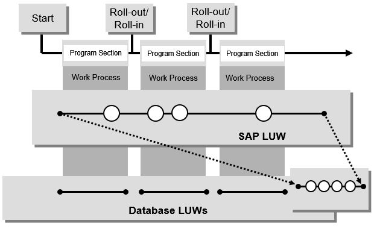

AS ABAP Release 754, ©Copyright 2019 SAP SE. All rights reserved.
ABAP Keyword Documentation → ABAP − Reference → Processing External Data → ABAP Database Access → Data Consistency →SAP LUW
An application program can be split into several program sections, which are processed in sequence using different work processes. Each switch of a work process is associated with an implicit database commit, which means that an application program is not associated with a single database LUW automatically. More specifically, this applies to dialog-oriented applications with classic dynpros in SAP GUI in which each dialog step is assigned a database LUW.
To ensure the data consistency of application programs that are executed across multiple work processes, the change statements are not executed directly in an SAP LUW. Instead, they are first registered and then executed by a single work process, that is in a single database LUW.

Bundling Methods
The following techniques are available for bundling the change statements in a database LUW:
Note
A function module can be specified as either an update function module or as remote-enabled, but not both at the same time. The update is used to realize SAP LUWs within AS ABAP, while transactional RFC creates LUWs in distributed systems.
Statements for SAP LUWs
Each opening of a new internal session (except for the statement CALL DIALOG) starts a new SAP LUW which can be controlled by the ABAP SQL statements
Notes
SAP LUWs and internal sessions
Each closing of an internal session ends the current SAP LUW. If a program is ended or an internal session closed using
and procedures are still registered in the current SAP LUW, the SAP LUW is ended and the procedures are not called or rolled back. Registered update function modules remain on the database but can no longer be executed.
Note
If a program is called using
a new SAP LUW opens, but not a new database LUW. This means that a database rollback in this SAP LUW can roll back all registration entries made by the statements CALL FUNCTION IN UPDATE TASK or CALL FUNCTION IN BACKGROUND TASK in the tables VB... or ARFCSSTATE and ARFCSDATA. Under certain circumstances, the statement ROLLBACK WORK in the called program can also affect the interrupted SAP LUW. To prevent this, an explicit database commit must be executed before the program is called. This problem does not occur in local updates.